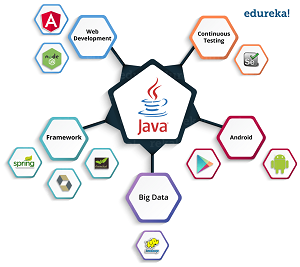
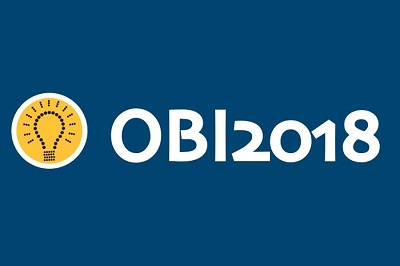

| Home | Técnica de Programação de Algoritimos(TPA) | Programação para a Web(PW) | Fundamentos da Informatica(FI) | Desing Digital(DD) | Matemática |
O mundo da informatica como o conhecemos tem uma de seus grandes pilares na programação de algoritimos, e nossos idealizadores sabiam disso quando fizeram este curso. Esta matéria esta voltada para o aprendizado das técnicas de programação(desenvolvimento de programas ou aplicações) desde as mais básicas para que todos possam acompanhar os ensinos sem grandes dificuldades, até tecnicas mais complexas e consigam desenvolver grnades projetos.
Nesta matéria temos ótimos profissionais do ramo da programação dispostos a ensinar tudo aos nosso estudantes, sendo eles Jeferson(Turma A) e Edna (Turma B) que ja conhecem bem os metodos didaticos sertos para guiar essas jovens mentes. Dentre as linguagens possiveis de se trabalhar aqui escolhemos uma das maiores do mercado para o ensino de nossos aluno, JAVA, uma completa linguagem que abre um mundo de diversas possibilidades criativas e profissionais aos estudantes.
Contam com muita tecnologia em computadores potententes e capazes de lhe ajudar nas necessidades, os estudantes utilizam programas eficiêntes para seus aprendizados, como Eclipse Oxygen e Netbeans. Nesta matéria os alunos são preparados e estimulados a participar da O.B.I(Olímpiada Brasileira de Informatica), a qual lhes trará grandes ganhos a seus currículos.
| Home | Técnica de Programação de Algoritimos(TPA) | Programação para a Web(PW) | Fundamentos da Informatica(FI) | Desing Digital(DD) | Matemática |
Direitos autorais para Gustavo Herrero Nunes - 1° D.S. - A